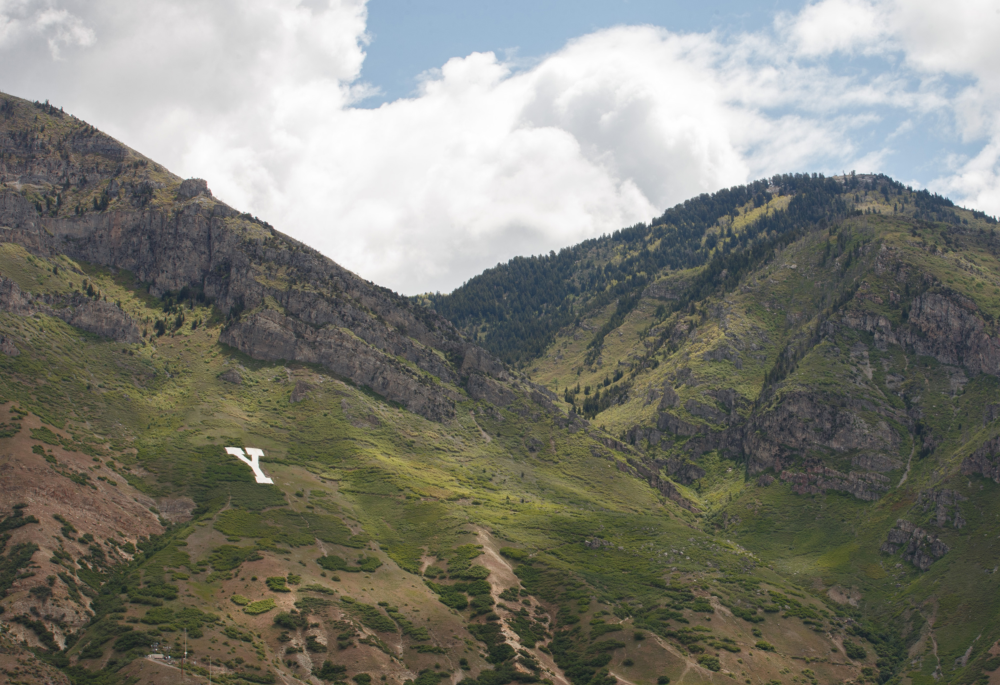

My favorite hikes located in Utah
- Angles Landing Angles landing, previously called the Temple of Aeolus is located in Zion Nation Park, Utah
- Mount Timpanogos
- Summit of Y mountain  Y Mountain is located East of BYU in Provo,Utah.
I personally have done this hike only once. Even though I have done it I didn't complete it due to a thunderstorm. If you look closely at the picture you can tell how thin the path gets and your sole support is that chain. During a thunderstorm this hike would have been deadly.
This hike now requires a permit to go on due to the mass quantity of people wanting to hike it. I would highly recommend it but make sure to check the weather and be safe.
 Mount Timpanogos, often called Timp, is the second-highest mountain in the Wasatch Range.
Mount Timpanogos, often called Timp, is the second-highest mountain in the Wasatch Range.
This hike is a long one. It is so beautiful though no matter what season you go in. There are two ways to make it to the top, Timpanooke or the Aspin Grove way.
I hiked timp starting in the early morning to avoid the heat but many choose to start the hike in the evening and arrive in time for the sunrise at the top.
I learned you could hike to the top of Y Mountain for the first time two years ago and I have lived here all my life. This was an amazing hike with a great view.
You take the normal Y trail and then take a smaller one near the top to continue up. As you continue to the summit there is even wild flower medows to walk through.